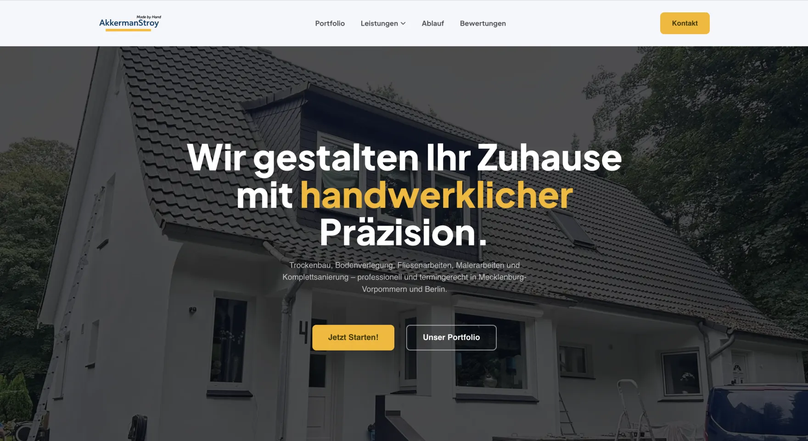
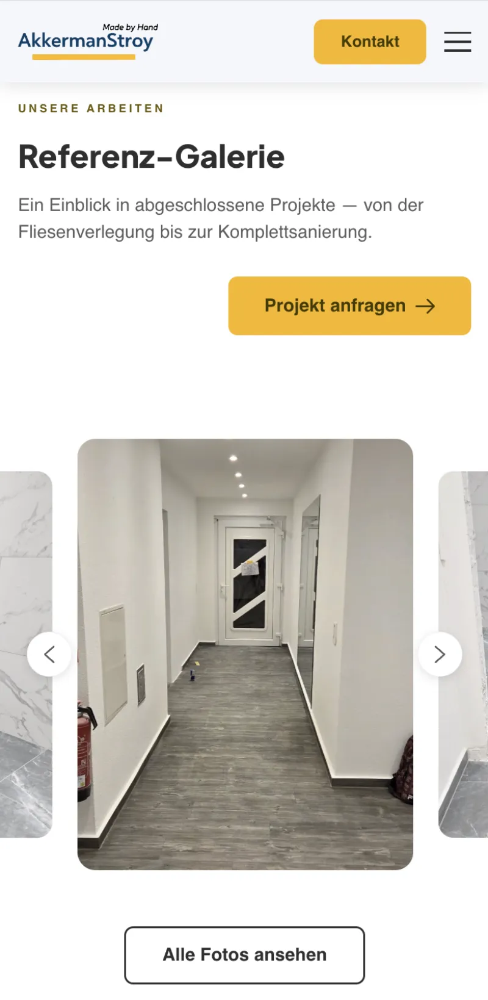
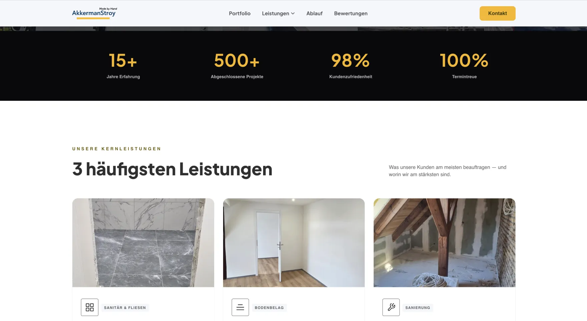
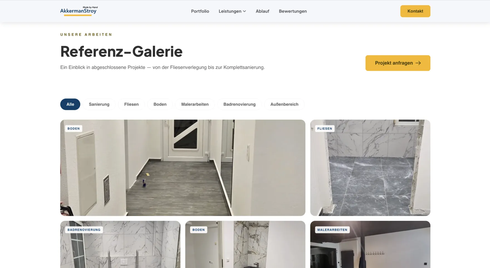
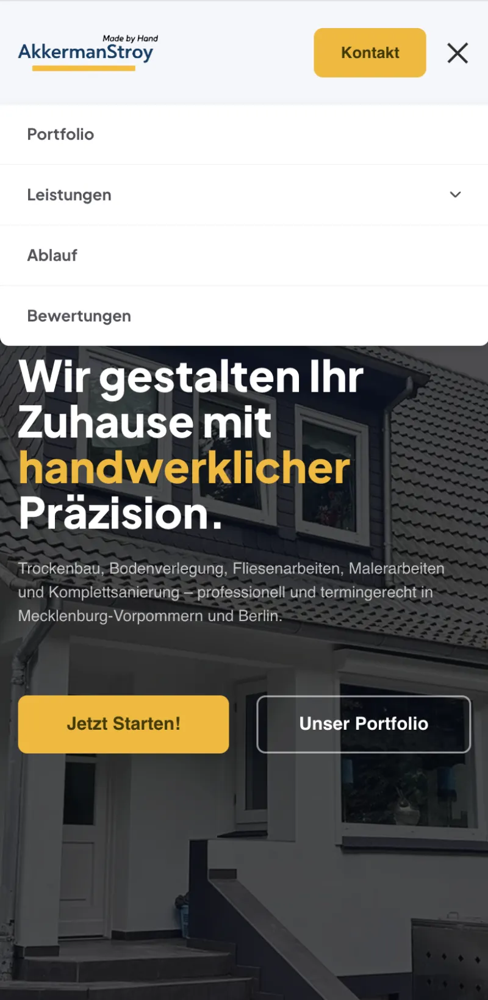
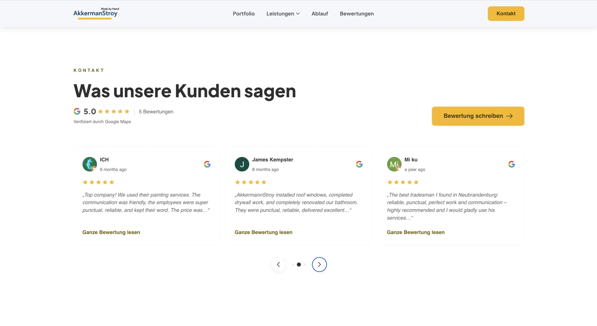

Akkerman Stroy Digitale Präsenz
Ein such-orientierter Neubau, der ein wachsendes Bauunternehmen für die relevanten Suchanfragen sichtbar machte — in Mecklenburg-Vorpommern und Berlin.


Ansatz
Für die Suche gebaut, nicht für die Bildershow
-
Such-orientierte Struktur
Eine klare Seite je Leistung und Einzugsgebiet, damit jede lokale Suche eine Landeseite hat.
-
Local content & markup
Echte Landing-Texte geschrieben und Schema, Sitemap sowie saubere Metadaten ergänzt, die Google lesen kann.
-
Rankings verdient
Ladezeit und mobile Bedienbarkeit optimiert, dann wöchentlich die Positionen verfolgt und nachgeschärft.

Ansichten
Gefunden werden



Ergebnis
Von den Richtigen gesehen
- +140%Organischer Traffic
- #1Für Ziel-Keywords
- 6Seiten je Einzugsgebiet
“Professional, responsive, and detail-oriented. They delivered exactly what we needed.”